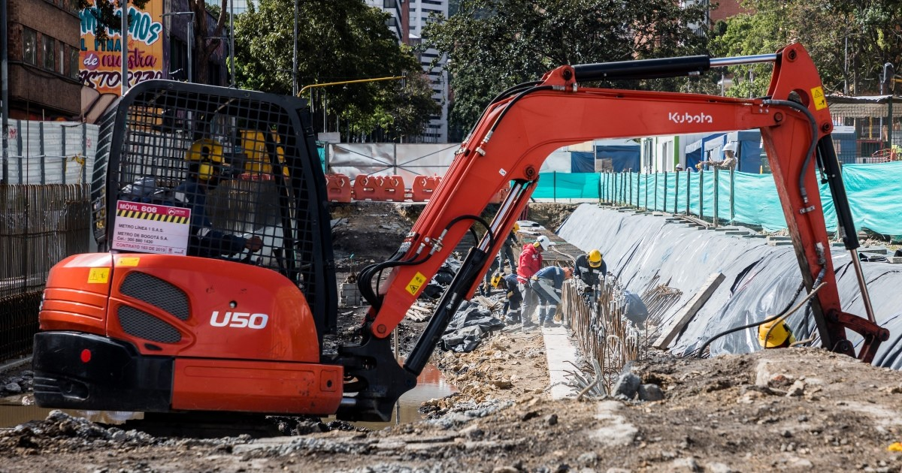

Quiénes somos
Infrayic S.A.S. nació de una pregunta sencilla: ¿por qué sigue siendo tan difícil reportar un hueco en la calle? Somos un equipo de ingeniería civil e ingeniería de sistemas que construyó BogoVial para que cualquier persona en Bogotá pueda reportar un daño en segundos, y para que las entidades sepan cuál atender primero.
Lo que nos distingue
Dos ingenierías, un solo equipo
Civil y Sistemas trabajan juntos desde el diseño: no es una app genérica con datos de obra pegados encima.
Empezamos por un barrio real
Quesada, Teusaquillo, entre las calles 48 y 49 y las carreras 15 y 16: probamos todo ahí antes de prometer una ciudad entera.
Tecnología propia
El análisis de severidad y el cálculo de prioridad son algoritmos que desarrollamos nosotros mismos.
Nuestro equipo en terreno
